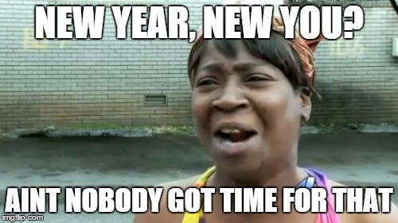

New year; new you — that’s what they say, isn’t it? In my case, not exactly. While becoming an entirely brand new person sounds like fun, it’s the last thing that I’d want to do. I’m looking forward to using this year to improve myself — work harder, better, and push myself to new heights. January marks the beginning of my second year as a university student, and my first as a software engineer; it’s not a prospect that I take lightly, and I intend on making the most of every opportunity presented to me in the coming year.
I have a number of goals that I wish to complete this year, and each one has the aim of improving my mental, physical or emotional wellbeing (or a combination of the three). They are:
Progress on my Android app, “C# Quick Reference” has been a little slow this month, and I aim to spend some more time working on it in February. I have really enjoyed the experience so far, and after a few little hiccoughs in initial development where I didn’t really understand how to use Android Studio effectively, I’m off to a good start. My favourite aspect of working with Android Studio is the ability to customise my content. While the drag-and-drop editor is fantastic for layouts, I really enjoy being able to use the XML skills I learned last year to make more complicated edits in the code. Learning Java has been relatively simple — I have been able to apply many concepts I learned from my time in C#, and while I’m not learning the language comprehensively at the moment, I’ve been able to figure out what is needed to bring my app into a cohesive whole. The most difficult part of developing the app so far has been writing the content. I need to commit to writing more content next month if I intend on releasing the app before the end of the year.
I gave jesspetersen.net a facelift this month, and I’m super pleased with the results. While my original site (located at site.jesspetersen.net) served the purpose of displaying my portfolio and achievements to the world, I really wanted something more streamlined and attractive. After days of agonising over various drag-and-drop site creators before discovering that the only way to link it to my domain required me to spend money, I eventually settled on an HTML/CSS template. The template was very well documented and I was easily able to alter it to match my needs, changing the initial page to suit each individual section of my site. Even though the new and improved site isn’t entirely of my own creation, I feel much better knowing that it is more professional and presentable to potential employers and colleagues.
More than anything, I can’t wait to start back at university next month. While working on my personal projects has been a great way to spend the holidays, especially since I’m making relatively good progress, it does start to get boring after a while. Going back to school and working on my education is something that I take great pleasure in, and I love the variety of knowledge as well as being with my friends who have similar interests.
I’m working hard on my goals and with school just around the corner, I’m more motivated than ever to get some work done — bring on February; bring on my future.
© Jessica Petersen. All rights reserved. | Initial Design by TEMPLATED.